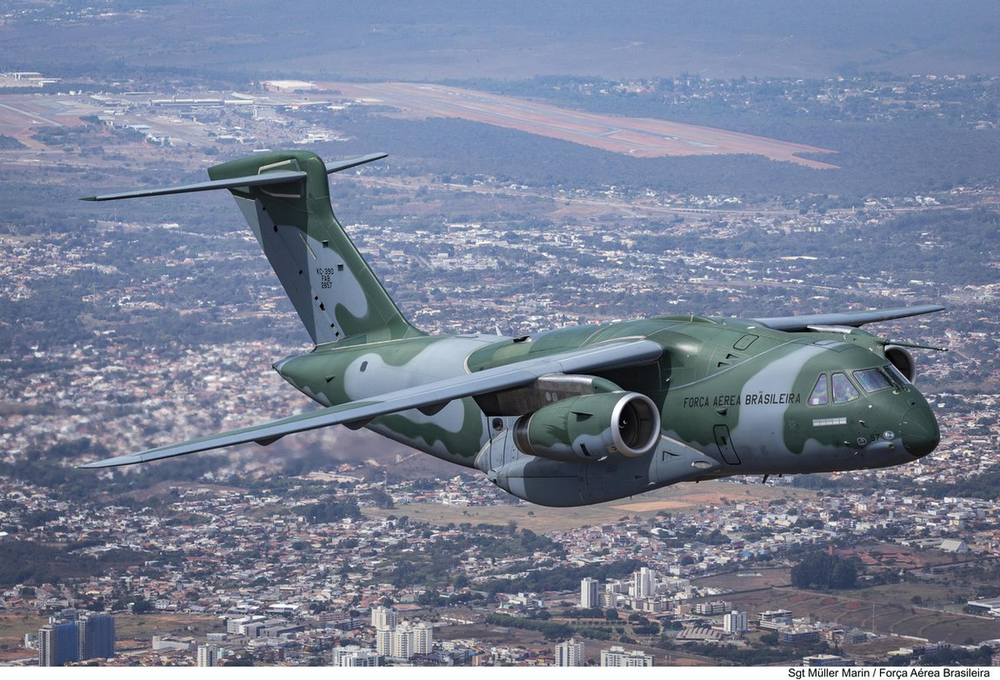

SOBRE A AERONAVE
Embraer KC-390 Millennium. Esse é o “nome e sobrenome” do maior avião militar projetado, desenvolvido e fabricado no continente sul-americano. Uma aeronave que carrega em seu DNA a história de perseverança e visão de Ozires Silva com o EMB-110 Bandeirante dos anos 1960, bem como a tecnologia do estado da arte que o põe no hall das aeronaves de transporte mais capazes no mundo.
Em agosto, a equipe do Portal Aeroflap conheceu de perto o KC-390 para produzir uma série de vídeos, bem como esta reportagem. Atualmente são quatro aeronaves em serviço com o 1º Grupo de Transporte de Tropas (1º GTT), o Esquadrão Zeus, uma unidade que desde de 2018 tem como sede a Ala 2, Base Aérea de Anápolis.
Há 16 anos, a Embraer começava os primeiros desenhos do que hoje é o KC-390. A aeronave nasceu a partir de um estudo do setor de inteligência da fabricante brasileira, que acabou encontrando uma necessidade de mercado a longo prazo. Várias nações iriam, nos próximos anos, substituir aeronaves de transporte militar mais antigas, especialmente o Lockheed C-130. O C-130J Super Hércules e o Airbus A400M Atlas já eram ruma realidade, todavia, uma realidade cara.
A partir desses estudos, a fabricante começou o projeto, com o desenho sendo inicialmente chamado de CXX e, mais tarde, designado como C-390. O projeto era basicamente um E190 E-Jet modificado com um grande compartimento de carga, asas altas e estabilizadores horizontais montados na fuselagem, e não no topo da deriva como temos hoje.

FONTE E PARA SABER MAIS: clique aqui
ASSISTA A UM VÍDEO DA AERONAVE AQUI: clique aqui
voltar